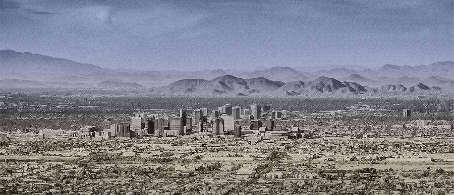

Phoenix Metropolitan Area

The Phoenix Metropolitan Area also the Valley of the Sun, the Salt River Valley, or Metro Phoenix (known by most
locals simply as “the Valley”)
is the largest metropolitan area in the Southwestern United States, centered on the city of Phoenix, that
includes much of the central part of Arizona.
The United States Office of Management and Budget designates the area as the Phoenix-Mesa-Scottsdale
Metropolitan Statistical Area (MSA), defining it as
Maricopa and Pinal counties. As of the 2020 census, Metro Phoenix had 4,845,832 residents, making it the 11th
largest metropolitan area in the nation by
population. It anchors the Arizona Sun Corridor megaregion along with the second most populous metropolitan area
in the state, the Tucson metropolitan
area. The gross domestic product of the Phoenix Metropolitan Area was $255 billion in 2018, 16th largest amongst
metro areas in the United States.
| Cities and Suburbs Populations |
City Name |
Population |
Founded |
| Phoenix |
1,608,139 |
1868 |
| Mesa |
504,258 |
1878 |
| Chandler |
275,987 |
1912 |
| Gilbert |
267,918 |
1920 |
| Glendale |
248,325 |
1910 |
| Scottsdale |
241,361 |
1951 |
| Peoria |
190,985 |
1954 |
| Tempe |
180,587 |
1892 |
| Data from Wikipedia 06/2022 |